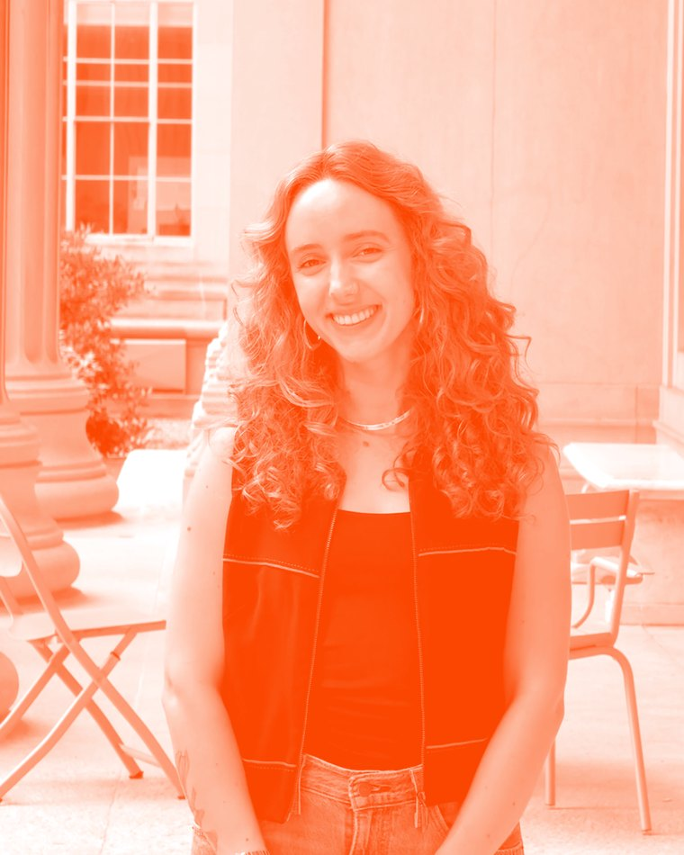
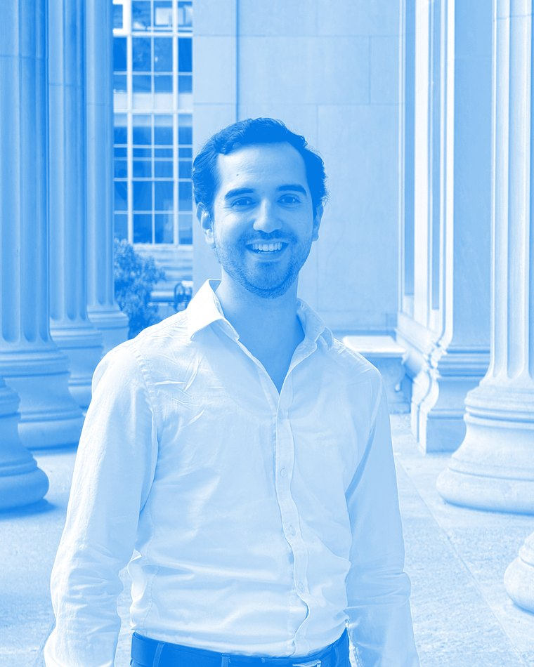

Laura Dallabrida
head of partnerships
People
founded by students from brazil, argentina, and peru

head of partnerships

head of communication
head of governance
head of finance
Bios
Architect and Urban Planner from Universidade Federal de Minas Gerais (UFMG) pursuing a Master in City Planning at MIT DUSP as a Lemann fellow. Laura's work focuses on spatial and environmental justice, particularly through water, sanitation, and climate-resilient infrastructure provision. She has coordinated urban upgrading and climate adaptation programs at São Paulo's city government and worked with the C40 Cities Finance Facility on green infrastructure financing for Brazilian informal settlements. At MIT, she is exploring and researching international development, community action, and infrastructure governance, financing and implementation in Latin America.
Architect from Pontificia Universidad Católica del Perú (PUCP) pursuing a Master in City Planning at MIT DUSP. Pietro's work focuses on urban planning, neighborhood upgrading, sustainable infrastructure, and improving living conditions in underserved communities. He has worked on public infrastructure projects in Peru, including the Bicentennial Schools program and post-disaster reconstruction projects in healthcare and education. At MIT, he is exploring data-driven planning, informal settlements, and sustainable infrastructure through the DesignX startup Visible, and recently worked with Slum Dwellers International (SDI) on participatory planning and community-led development.
Architect and Urbanist from Universidade de São Paulo (USP) pursuing a Master in City Planning at MIT DUSP as a Lemann fellow. Barbara's work focuses on urban mobility, infrastructure, public policy, and financing mechanisms in Latin America. She has led a sustainable urban mobility program financed by IDB in the metropolitan region of São Paulo and worked with ITDP México on development around Mexico's new passenger rail network. At MIT, she participated in the Sandbox Innovation Fund Program, and is exploring how policy, financing, and technical capacity can enable sustainable urban mobility and infrastructure.
Sociologist from the University of Buenos Aires (UBA) and Master in Public Policy from Torcuato Di Tella University, pursuing a Master in City Planning at MIT DUSP as a Fulbright scholar. Julieta's work focuses on infrastructure and economic development at the national and local levels in Latin America. She has worked with local governments, civil society organizations, UNDP Argentina's Accelerator Lab, and the World Bank's Latin America urban and disaster risk management unit. At MIT, she explores affordable housing finance, municipal finance, infrastructure development, and urban informality.
Territorio is supported and advised by Professor Gabriella Carolini.